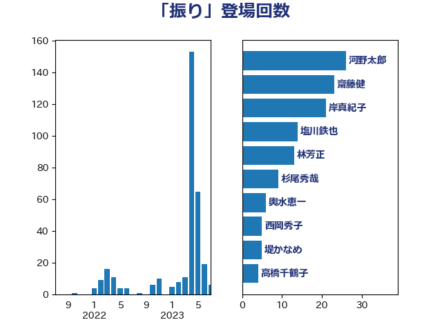

単語「振り」

| 河野太郎 | 自由民主党 | 26 回 |
| 齋藤健 | 自由民主党 | 23 回 |
| 岸真紀子 | 立憲民主党 | 21 回 |
| 塩川鉄也 | 日本共産党 | 14 回 |
| 林芳正 | 自由民主党 | 13 回 |
| 杉尾秀哉 | 立憲民主党 | 9 回 |
| 輿水恵一 | 公明党 | 6 回 |
| 西岡秀子 | 国民民主党 | 5 回 |
| 堤かなめ | 立憲民主党 | 5 回 |
| 高橋千鶴子 | 日本共産党 | 4 回 |
| 森田俊和 | 立憲民主党 | 4 回 |
| 小野泰輔 | 日本維新の会 | 4 回 |
| 宮路拓馬 | 自由民主党 | 4 回 |
| 西村明宏 | 自由民主党 | 3 回 |
| 奥下剛光 | 日本維新の会 | 3 回 |
| 中司宏 | 日本維新の会 | 3 回 |
| 鶴保庸介 | 自由民主党 | 2 回 |
| 萩生田光一 | 自由民主党 | 2 回 |
| 後藤茂之 | 自由民主党 | 2 回 |
| 岸田文雄 | 自由民主党 | 2 回 |
| 岡本あき子 | 立憲民主党 | 2 回 |
| 山際大志郎 | 自由民主党 | 2 回 |
| 山田太郎 | 自由民主党 | 2 回 |
| 伊藤岳 | 日本共産党 | 2 回 |
| 仁木博文 | 無所属 | 2 回 |
| 中川宏昌 | 公明党 | 2 回 |
| 音喜多駿 | 日本維新の会 | 1 回 |
| 阿部弘樹 | 日本維新の会 | 1 回 |
| 長谷川英晴 | 自由民主党 | 1 回 |
| 鈴木宗男 | 日本維新の会 | 1 回 |
| 鈴木俊一 | 自由民主党 | 1 回 |
| 進藤金日子 | 自由民主党 | 1 回 |
| 足立康史 | 日本維新の会 | 1 回 |
| 舩後靖彦 | れいわ新選組 | 1 回 |
| 稲田朋美 | 自由民主党 | 1 回 |
| 神谷宗幣 | 参政党 | 1 回 |
| 石田昌宏 | 自由民主党 | 1 回 |
| 田畑裕明 | 自由民主党 | 1 回 |
| 猪瀬直樹 | 日本維新の会 | 1 回 |
| 牧島かれん | 自由民主党 | 1 回 |
| 浜口誠 | 国民民主党 | 1 回 |
| 河野義博 | 公明党 | 1 回 |
| 河西宏一 | 公明党 | 1 回 |
| 永井学 | 自由民主党 | 1 回 |
| 橋本岳 | 自由民主党 | 1 回 |
| 柳ヶ瀬裕文 | 日本維新の会 | 1 回 |
| 末松信介 | 自由民主党 | 1 回 |
| 朝日健太郎 | 自由民主党 | 1 回 |
| 斎藤アレックス | 国民民主党 | 1 回 |
| 斉藤鉄夫 | 公明党 | 1 回 |
| 掘井健智 | 日本維新の会 | 1 回 |
| 徳永エリ | 立憲民主党 | 1 回 |
| 平林晃 | 公明党 | 1 回 |
| 市村浩一郎 | 日本維新の会 | 1 回 |
| 川田龍平 | 立憲民主党 | 1 回 |
| 山本剛正 | 日本維新の会 | 1 回 |
| 山口晋 | 自由民主党 | 1 回 |
| 山井和則 | 立憲民主党 | 1 回 |
| 小西洋之 | 立憲民主党 | 1 回 |
| 小田原潔 | 自由民主党 | 1 回 |
| 小林鷹之 | 自由民主党 | 1 回 |
| 宗清皇一 | 自由民主党 | 1 回 |
| 安江伸夫 | 公明党 | 1 回 |
| 守島正 | 日本維新の会 | 1 回 |
| 大石あきこ | れいわ新選組 | 1 回 |
| 坂本祐之輔 | 立憲民主党 | 1 回 |
| 土屋品子 | 自由民主党 | 1 回 |
| 土井亨 | 自由民主党 | 1 回 |
| 國重徹 | 公明党 | 1 回 |
| 国定勇人 | 自由民主党 | 1 回 |
| 吉良州司 | 無所属 | 1 回 |
| 吉田統彦 | 立憲民主党 | 1 回 |
| 吉田とも代 | 日本維新の会 | 1 回 |
| 古賀之士 | 立憲民主党 | 1 回 |
| 加藤勝信 | 自由民主党 | 1 回 |
| 佐藤公治 | 立憲民主党 | 1 回 |
| 亀岡偉民 | 自由民主党 | 1 回 |
| 中村裕之 | 自由民主党 | 1 回 |
| ながえ孝子 | 無所属 | 1 回 |